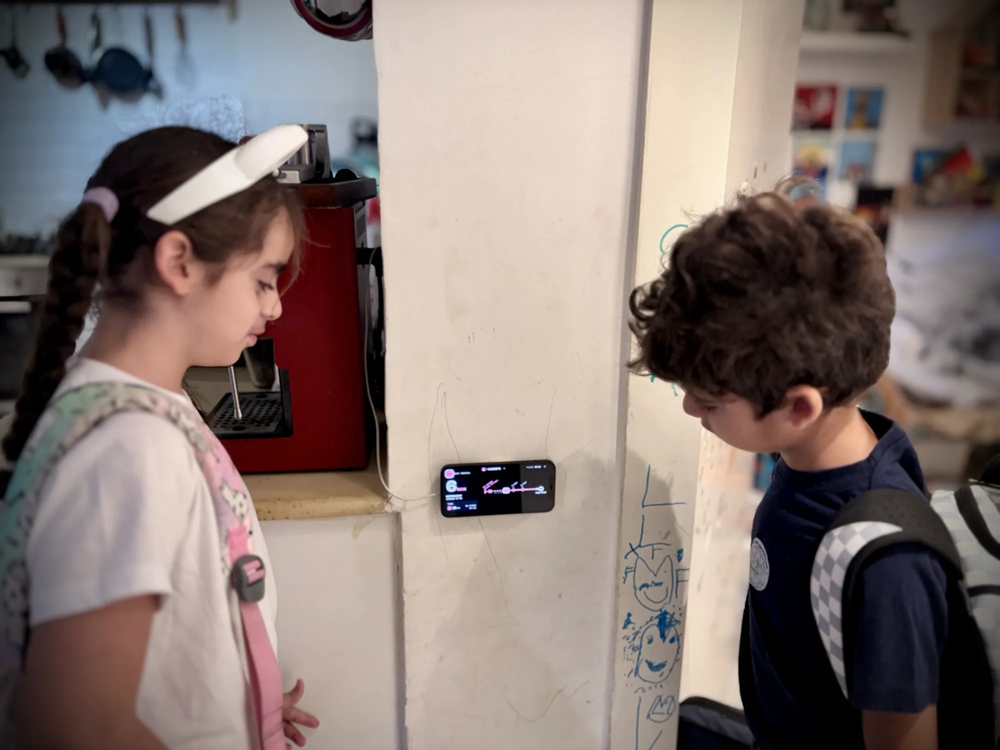

· Amir Hayek
"When is the bus coming?"
Every school morning my kids asked me the same question, and I never had the answer. So I built one.

That was the question, every morning, shoes half on, bags by the door. I didn't know. I could open a transit app, find the stop, scroll to the line and wait for it to load, but by then the moment was gone. So we guessed. Either we left too early and stood at the stop in the sun or the rain, or we left too late and ran.
One question, one glance
I built My Bus Stop to answer that one question the moment you look at it. You pick your stop and up to three lines, once. After that the screen shows how many minutes until the next bus, the one after it, and where each bus is on its route right now, in type big enough to read from across the room.


A new job for an old iPhone
I had an old iPhone lying in a drawer. Its back is broken, but its screen is fine. I 3D-printed a MagSafe holder for it, mounted it on the kitchen wall, and plugged it in. The app's Wall Mode keeps the screen on during the hours you choose, stays dark, dims at night, and shifts a little to protect the display. If the Wi-Fi drops, it recovers by itself.

Now the kids don't ask me anymore. They look at the wall. When the number is right, we go. Since then nobody in our house waits at the bus stop in the sun or the rain. We leave just in time.
Most families have an old phone or tablet like that somewhere. This gives it something useful to do again.
On every screen in the house
The same board runs on iPhone, iPad, Mac, Apple Watch and Apple TV, where the Top Shelf shows the next buses without even opening the app. Stops you save on one device show up on the others through your own iCloud. There's no account, no ads, and it's free.
It started with our stop in Israel. Today it works across Israel, Norway, and cities from London and Lisbon to New York, Seattle, Hong Kong and Tokyo, using the open real-time data that transit agencies publish.

My Bus Stop is on the App Store.
Get it for iPhone, iPad, Mac, Apple Watch and Apple TV, or try it on the web.